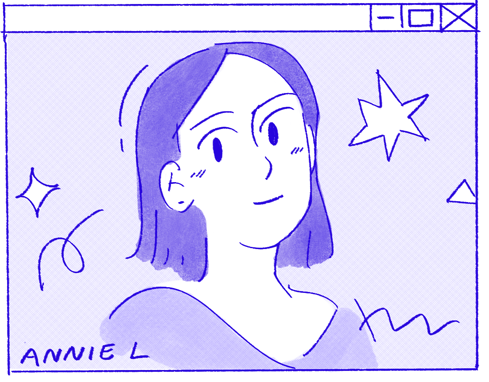

hello internet person! i'm annie–– a software engineer and artist, living in boston :~)
currently: sde @ amazon alexa
education: cs @ university of maryland
here are things im interested in:
- sustainable tech + climate justice
- cool productivity tools
- natural language processing
- art (especially comics & cute stuff)
- book, podcast, & substack recs
feel free to connect on
linkedin or contact annielu @ umd.edu (note that you visited this site)